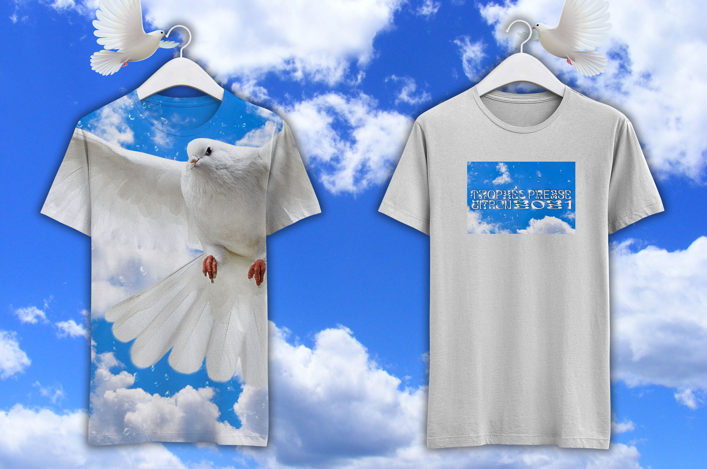
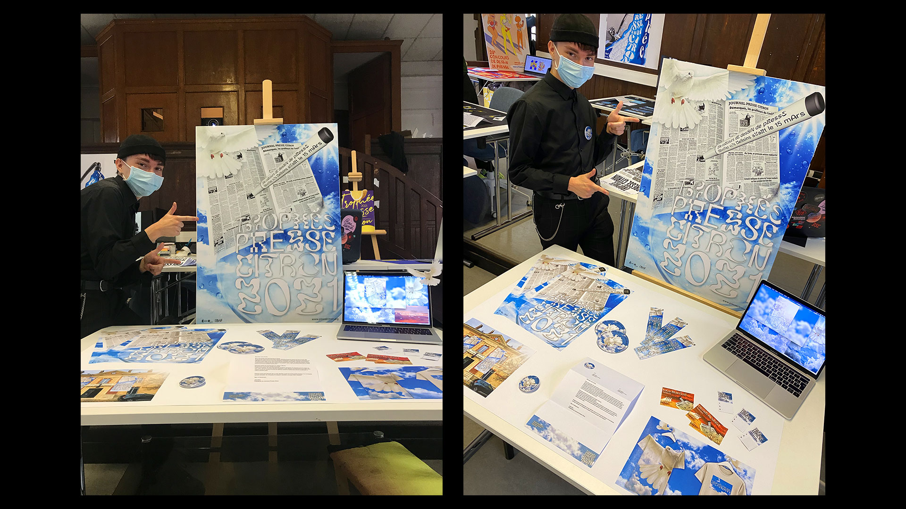
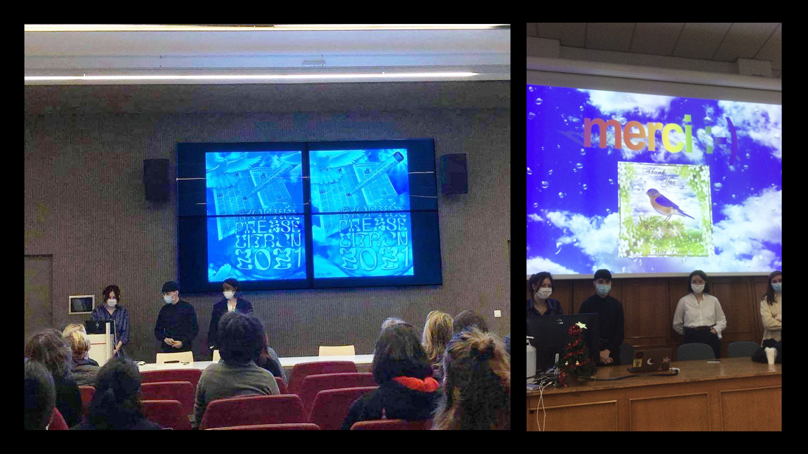
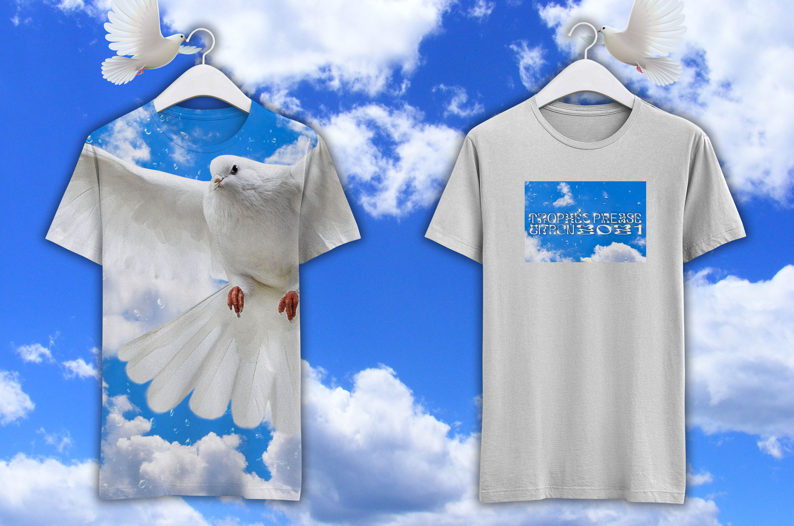
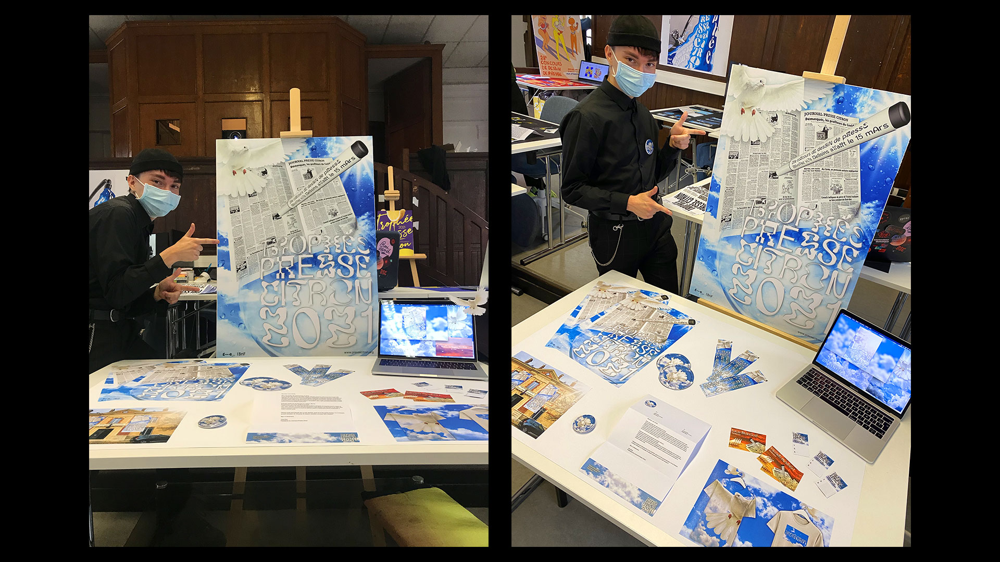
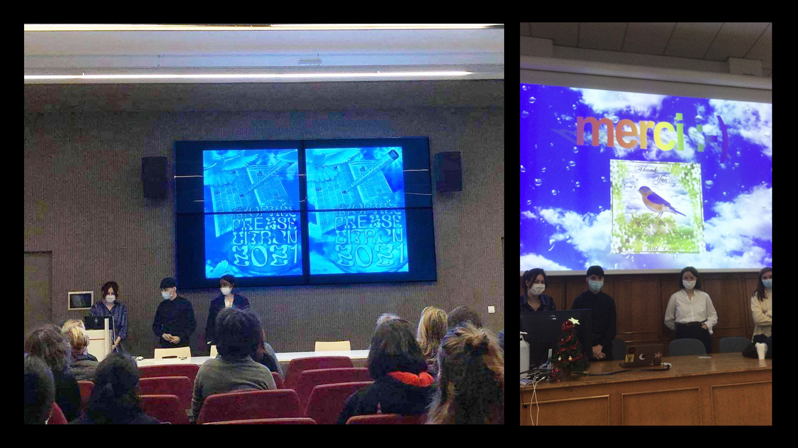

Morgan Gomez
Trophée Presse Citron 🕊
Visual identity
Visual identity proposition for the 28th annual event "Trophée Presse Citron", a press cartoon contest organized by École Estienne and La BnF.
The whole workshop was supervised by Diplomatie Studio, a french graphic design and art direction studio.
My concept with this identity was to shock people the same way press cartoons often shock people. They use visual codes that are made to be shocking, surprising, or uncomfortable, and that's what I wanted to do with this whole visual world.
So relax, and take a look at the magnificent journey of the Liberty of Expression and Peace Dove. 🕊


 




